-
We have 3 types of custom items as of the moment
-
Weapons
This type item is either a weapon or a weapon accessory
-
Tools
This type of item is a tool that has custom abilities
-
Armor
This type of item is just armor with cosmetics, but its unbreakable and as strong as a diamond helmet!
-
Foods
You can eat or drink them for fun!
Since we have so many custom items, we will show them in their corresponding sections.
-
Musket
This Weapon can be used to shoot or to hit, with a shooting damage of 20 hearts and the hitting damage of an iron sword.
you can also enchant this weapon with any enchantments of a minecraft iron sword
you can craft it with these ingredients in this exact pattern:
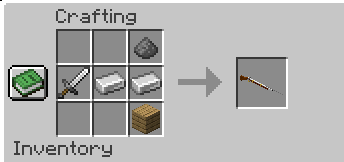
-
Musket ammo
Of course, if you want to shoot with a musket you're gonna need some ammo for that.
So, we came up with a recipe that has a reasonable price.
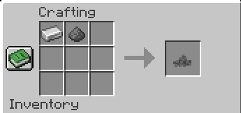
you can arrange the items in any way you like
-
Compressed Log
This is a tool item used to craft other tools.
It's crafted by compressing 9 logs:
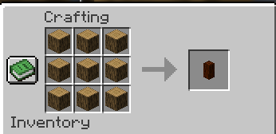
-
Wooden Chopper
This is the first axe in the custom axe line.
It can destroy the log above the log you broke, as long as both are a log and they are made of the same type of log.
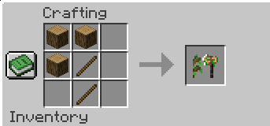
To Craft it you need to follow this exact arrangement.
-
Lumber Axe
This is the second axe in the custom axe line.
Its functionality is very similar to the one of the wooden chopper, just that it can break one block more.
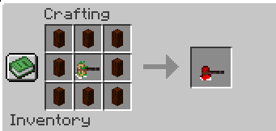
To Craft it you need to follow this exact arrangement.
-
Tree Capitator
This is the final axe in the custom axe line.
It works just like the other two axes in the axe tree, just that it can break 100 logs vertically
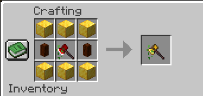
To Craft it you need to follow this exact arrangement.
-
Compressed Obsidian
This is a tool item used to craft other tools.
It's crafted by compressing 9 Obsidian:
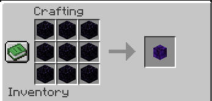
-
Stony Picker
This is the first pickaxe in the custom pickaxe line.
It can destroy the block above the block you broke, making strip mining easier.
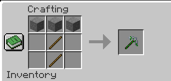
To Craft it you need to follow this exact arrangement.
-
Miner Pickaxe
This is the second pickaxe in the custom pickaxe line.
oIts functionality is very similar to the one of the stony picker, just that it can break blocks faster,
is capable of mining ores like diamonds, and can mine entire ore veins at once.
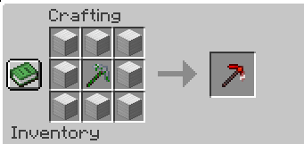
To Craft it you need to follow this exact arrangement.
-
Rock Splitter
This is the final pickaxe in the custom axe line.
This OP Pickaxe can mine an entire 3x3 plane at once,
and has all the other specs of a netherite pickaxe, and can mine entire ore veins at once!
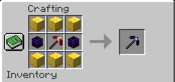
To Craft it you need to follow this exact arrangement.
-
Knight Helmet
This is a Knight's helmet and its unbreakable!
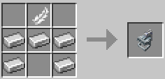
Exact arrangement required.
-
Crown
This is a King's Crown and its unbreakable!
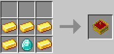
Exact arrangement required.
-
Dough
This is a food item used in a lot of food recipes.
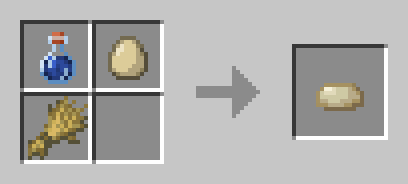
You can arrange the items at your liking.
-
Ground Beef
Yes. Really.
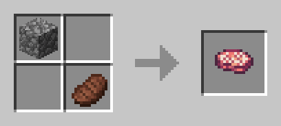
You can arrange the items at your liking.
-
Perogi
Eat this italian specialty for fun!
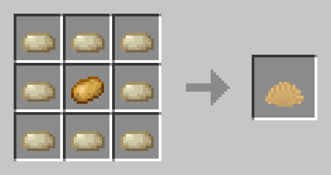
Exact arrangement required.
-
Calzone
Who combined Pizza and Perogi?!
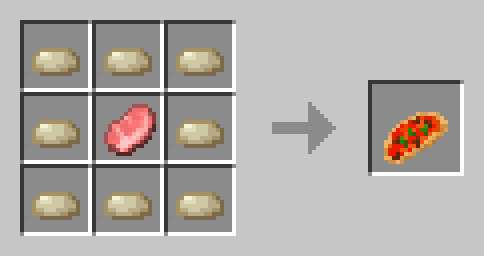
Exact arrangement required.
-
Pasta
YAY SPAGHETTI!
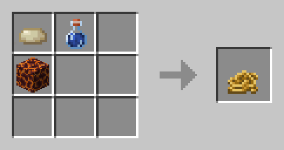
You can arrange the items at your liking.
-
Knife
Better Not Eat it! Used to make fries and toast.
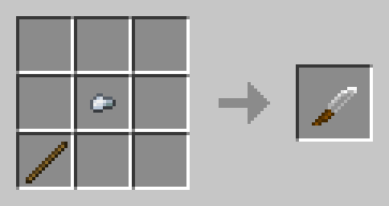
Exact arrangement required, but you can move the position in the grid around.
-
Fries
We gotta get some american culture in here!
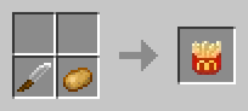
You can arrange the items at your liking.
-
Sweetberry Jam
Gramma makes the best one!
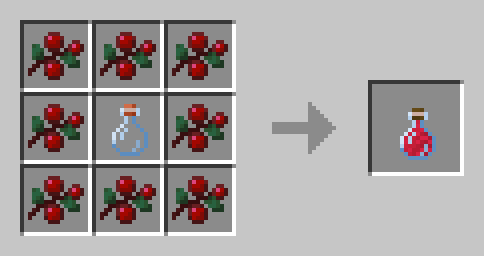
You can arrange the items at your liking.
-
Toast
We need some variation to our bread!
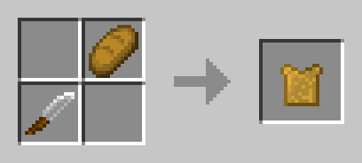
You can arrange the items at your liking.
-
Toast with Sweetberry Jam
A great combination!
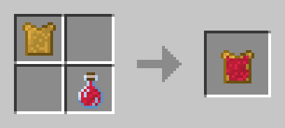
You can arrange the items at your liking.
-
Döner Kebab
What did you expect? It's in our Name!
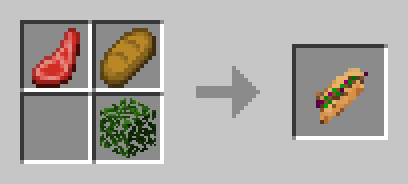
You can arrange the items at your liking.
Weapons
as of the moment, we have 2 weapon items:Tools
for now, we have 6 tools and 2 tool items, but we plan to expand to 12 tools and 4 tool items:DISCLAIMER: tools are not in the game because of game breaking glitches. we will add them soon.
Axes:
Pickaxes:
Armor:
we have 2 Armor Items.Foods:
We have 2 Food related items and 9 Custom Foods. We also have some drinks from BreweryX and were working on custom textures and a better documentation.DISCLAIMER: THE ITEM OUTPUT COUNTS IN THE RECIPES MIGHT NOT REPRESENT THE ONES IN GAME!